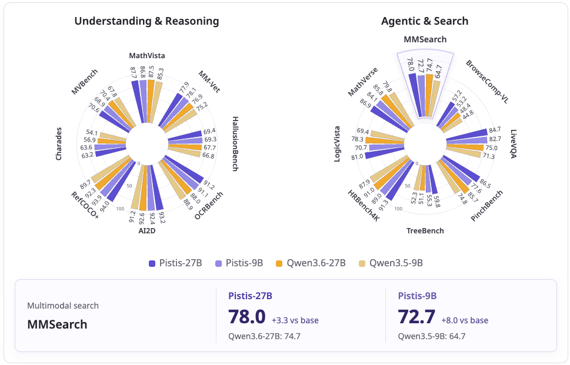
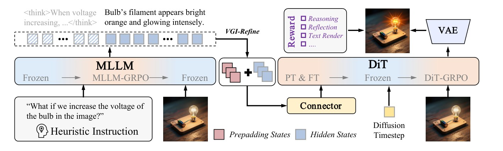

Qi Song*, Honglin Li*, Y. Yu, H. Zhou, L. Yang, Song Bai, Qi She, Zilong Huang†, Yunqing Zhao†
IEEE/CVF Conference on Computer Vision and Pattern Recognition (CVPR), Denver, USA, 2026.
Thinking with images through adaptive visual coding. A multimodal model learns when and how to use tools, writes executable code, and checks the visual evidence it creates. Tech lead and corresponding author.
Mengcheng Lan, Chaofeng Chen, Jiaxing Xu, Zongrui Li, Yiping Ke, Xudong Jiang, Yingchen Yu, Yunqing Zhao†, Song Bai
IEEE Transactions on Pattern Analysis and Machine Intelligence (TPAMI), 2026.
Token-efficient segmentation through generative language modeling. Compact textual mask representations reduce sequence length and speed up inference, without a separate mask decoder. Tech lead and corresponding author.

Heyun Chen, Xiaohan Lan, Jiaxi Li, …, Xudong Zhang, Yunqing Zhao, Shuai Zheng
Technical Report, 2026.
Multimodal models trained with interleaved distillation and reinforcement learning for reasoning and long-horizon agentic tasks.
My contribution: post-training trajectory synthesis and benchmark evaluation for long-horizon agentic multimodal understanding.
Yan Fang*, Mengcheng Lan*, Zilong Huang†, Weixian Lei, Yunqing Zhao, Yujie Zhong, Yingchen Yu, Qi She, Yao Zhao, Yunchao Wei†
European Conference on Computer Vision (ECCV), Malmö, Sweden, 2026.
GenLIP pretrains the vision encoder as a language generator: the ViT reads image patches and learns to predict the accompanying text. This autoregressive objective aligns visual pretraining with LLMs, without a contrastive loss or a separate text decoder.
Training integrated into mlfoundations/open_clip, with initial encoder support in Hugging Face's timm.

Siyu Jiao*, Yiheng Lin*, Yujie Zhong†, Qi She, Wei Zhou, Xiaohan Lan, Zilong Huang, Fei Yu, Yingchen Yu, Yunqing Zhao, Yao Zhao, Yunchao Wei†
IEEE/CVF Conference on Computer Vision and Pattern Recognition (CVPR), Denver, USA, 2026.
A multimodal LLM plans and a diffusion transformer draws; alternating reinforcement learning trains both for visual generation across diverse scenarios.